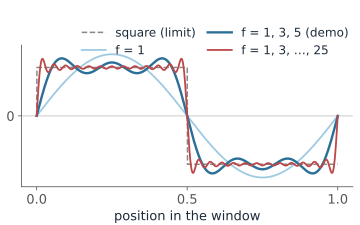
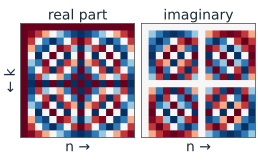
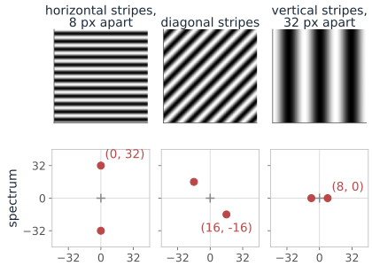
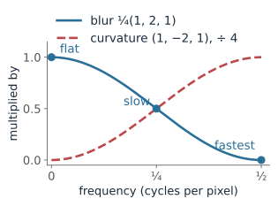
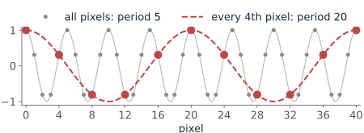

The discrete Fourier transform (DFT) is a change of basis to those waves.
In 2D, each coefficient is a plane wave with a direction and a frequency.
Convolution theorem: filtering = multiplying the spectrum. Low-pass, high-pass, notch.
Sampling: what a pixel grid can and cannot represent (aliasing).
Slides titled The math give the formulas and proofs; the ideas are complete without them.
Try it: build a wave
Everything is a sum of waves
Any signal on a window can be built by adding up waves: slow ones (a few cycles per window) and fast ones (many cycles).
Slow waves carry the broad shape; fast waves carry sharp edges and fine detail. A square wave needs ever faster waves to get its corners right.
The spectrum says how much of each wave there is.
To find how much of one wave a signal contains, multiply the signal by that wave and average: the waves are perpendicular to each other (orthogonal), so every other wave averages out. It is a projection, as onto the axes of a coordinate system.

The math: Fourier series
A signal on 0 \le t < 1 can be written as
f(t) = \sum_{k} c_k\, e^{2\pi i k t}, \qquad c_k = \int_0^1 f(t)\, e^{-2\pi i k t}\, dt.
The waves are orthogonal: \displaystyle\int_0^1 e^{2\pi i k t}\, \overline{e^{2\pi i l t}}\, dt = \begin{cases} 1 & k = l,\\ 0 & k \neq l,\end{cases} so the integral against e^{-2\pi i k t} picks out c_k alone.
|c_k| is the amplitude of frequency k, \arg c_k its phase.
The DFT is a change of basis
A signal of N numbers can be rewritten as the amounts of N waves: the same vector in two coordinate systems. Nothing is lost, and you can go back exactly.
signal x
DFT X (frequency 0, 1, 2, 3)
1, 1, 1, 1
4, 0, 0, 0
flat: only frequency 0 (= N × the mean)
1, 0, −1, 0
0, 2, 0, 2
one cosine cycle: frequencies +1 and -1
0, 1, 0, −1
0, -2i, 0, 2i
the same wave, shifted: same sizes, other phases
A real wave always shows up as a mirror pair of frequencies, +k and -k (index N - k).
The FFT computes the DFT fast: for a 1024 × 1024 image, about 2 \cdot 10^7 operations instead of 10^{12} for the plain matrix product.
The math: the DFT
For a signal of length N, x = (x_0, \dots, x_{N-1}):
X_k = \sum_{n=0}^{N-1} x_n\, e^{-2\pi i kn/N}, \qquad x_n = \frac1N \sum_{k=0}^{N-1} X_k\, e^{2\pi i kn/N}.
In matrix form, X = Fx with F_{kn} = e^{-2\pi i kn/N}. The columns of F^* are orthogonal: F^*F = N\,I.
So x and X are the same vector in two bases. Nothing is lost; F^{-1} = \tfrac1N F^*.
Parseval: \sum |x_n|^2 = \tfrac1N \sum |X_k|^2. Energy is shared out over the frequencies.
For real x: X_{N-k} = \overline{X_k}. Frequencies come in mirror pairs\pm k.
The FFT computes X in \mathcal{O}(N\log N) instead of \mathcal{O}(N^2).

Row k of F: a wave with k cycles. Rows k and N-k are mirror pairs.
From 1D to 2D: plane waves
In 2D, each coefficient is a stripe pattern: a wave with a direction and a frequency (how many stripes fit across the image).
We show the spectrum with frequency (0, 0) in the centre, on a log scale (the centre is huge compared to the rest).
Distance from the centre = frequency (fine vs coarse). Angle = orientation of the wave.
A pattern of stripes gives a pair of bright dots, on the line perpendicular to the stripes.
Example: horizontal stripes 8 pixels apart in a 256 × 256 image: 256 / 8 = 32 cycles from top to bottom, so dots at 32 above and 32 below the centre.

The math: the 2D DFT
For an N\times N image, the basis functions are
e^{2\pi i (ux + vy)/N}: \text{ a wave along the direction } (u, v), \text{ with } \sqrt{u^2+v^2} \text{ cycles across the image,}
X_{u,v} = \sum_{x=0}^{N-1}\sum_{y=0}^{N-1} I(x, y)\, e^{-2\pi i (ux + vy)/N}.
The 2D DFT is the 1D DFT on every row, then on every column (it is separable): e^{-2\pi i (ux + vy)/N} = e^{-2\pi i ux/N}\, e^{-2\pi i vy/N}.
We show the spectrum as \log(1 + |X_{u,v}|), with the indices shifted so that (0, 0) is in the centre.
Filtering = turning frequencies up and down
Sliding a kernel over an image does something simple to every wave: it multiplies it by a number, its frequency response. Waves come out as the same waves, only stronger or weaker.
Check with the 1D blur \tfrac14\,(1, 2, 1) (wrapping around at the ends):
input
output
multiplied by
flat: 1, 1, 1, 1, …
1, 1, 1, 1, …
1
slow wave: 1, 0, −1, 0, …
0.5, 0, −0.5, 0, …
0.5
fastest wave: 1, −1, 1, −1, …
0, 0, 0, 0, …
0

Blurs keep slow waves and remove fast ones: low-pass. The Laplacian removes the flat part and boosts fast waves: high-pass.
The sum of the weights is the response to a flat image: frequency 0.
Large kernels are cheaper in frequency space: transform, multiply, transform back.
Gaussian blur: \hat w is (close to) a Gaussian too, largest at 0: a low-pass filter.
Laplacian: \hat w \propto -(u^2 + v^2) near 0, zero at frequency 0: a high-pass filter.
Sum of weights = \hat w(0, 0): the response to the average brightness.
Cost via the FFT: two FFTs and a product, \mathcal{O}(N^2\log N) for an N\times N image.
Try it: filter an image in frequency space
Sampling and aliasing
A pixel grid needs at least two samples per cycle to represent a wave: the finest pattern it can hold has a period of 2 pixels.
Finer detail is not lost silently: it folds back and appears as a false, coarser pattern (aliasing, moiré).
Example: a pattern that repeats every 5 pixels; keep every 4th pixel. The new grid can only hold periods of 8 original pixels or more, and the pattern shows up with a false period of 20 pixels.
So before downsampling an image, blur it first (low-pass), to remove what the coarser grid cannot hold.
Same reason the optics of a microscope should match the pixel size of its camera.

The math: the Nyquist frequency
A grid with spacing \Delta can represent frequencies up to the Nyquist frequency\tfrac{1}{2\Delta}.
On the grid, a wave of frequency f and one of frequency f - \tfrac{m}{\Delta} (any integer m) give identical samples:
e^{2\pi i f n\Delta} = e^{2\pi i (f - m/\Delta)\, n\Delta}\, e^{2\pi i m n} = e^{2\pi i (f - m/\Delta)\, n\Delta}.
So f is seen as the frequency f - m/\Delta that lies in \left[-\tfrac{1}{2\Delta}, \tfrac{1}{2\Delta}\right].
Example: f = \tfrac15 per pixel, \Delta = 4: Nyquist is \tfrac18; \tfrac15 - \tfrac14 = -\tfrac1{20}, a false period of 20 pixels.
Summary
The DFT is an orthogonal change of basis to waves; nothing is lost.
Low frequencies = broad shapes; high frequencies = edges, texture and noise.
Convolution theorem: filtering is multiplication in frequency space. Kernels have a frequency response.
Isolated peaks in the spectrum = periodic structure (or artefacts): remove them with a notch.
Sample at least twice per cycle, and low-pass before downsampling.